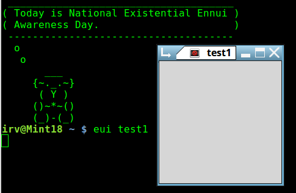
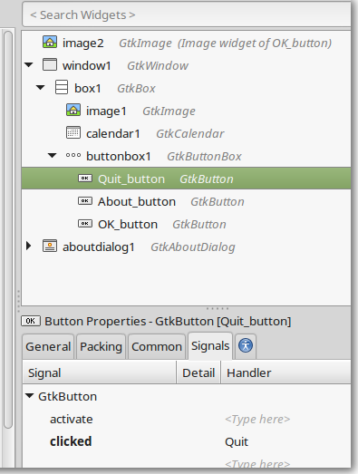
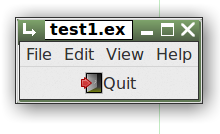
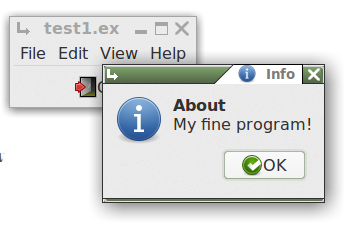

Using Glade 1
Getting Started
Step 1 - Design a Window
- Open Glade, and create a new file
- (File/New menu item)
- Click on the Window icon
- (leftmost item under the Toplevels tab)
-
This will add a main window to your glade program.
It will be named window1.
- Next, click on the Common tab in the Window Properties pane
- (lower right) and scroll down a bit to the Widget Flags section.
- Check the Visible checkbox.
- If you don't make the main window visible,
how are you going to be able to tell if your program
is running? :)
- Save it with the extension .glade, e.g. test1.glade
This will produce a .glade xml file which describes the interface.
You don't need to be concerned with this xml, there's no need even
to look at it, and you certainly don't want to edit it! The sample below is provided just
to satisfy your curiosity:
<?xml version="1.0" encoding="UTF-8"?>
<!-- Generated with glade 3.18.3 -->
<interface>
<requires lib="gtk+" version="3.12"/>
<object class="GtkWindow" id="window1">
<property name="visible">True</property>
<property name="can_focus">False</property>
<child>
<placeholder/>
</child>
</object>
</interface>
These .glade files become huge rather quickly.
Step 2 - Link to Euphoria
Create a Euphoria program to load and run the .xml you just created:
include GtkEngine.e
add(builder,"test1.glade")
main()
Save this as test1.ex. You should keep the names of the main .glade file and the
main Euphoria .ex file the same. Bad things might happen if you don't.
Step 3 - Test Run
You will always run from an x-terminal (mate-terminal, etc)
until your program is completely finished. There is no way around this if you ever
expect to get it completely debugged.

Step 4 - Adding Widgets

- Add a container for a menu and button to your window
- Go back to Glade, and select a container.
- Box will do nicely
- (
 in screenshot at top of page)
in screenshot at top of page)
- Drag and drop it into the window
- (accept the default number of items, and click Create)
- Add a standard menu to your window
- Click on File
- (in the little 3-sided box under Containers, also)
- Drop it into the top panel in the window.
- Add a Quit button to your window
- Click on the OK button
- (under the Control and Display tab)
- Drop that into the bottom panel of the window.
- Click on the actual button (in the window) to select it.
- Select the General tab under Button properties
- (lower right pane)
- Scroll down to the Button Content section, click Stock Button, and from the combo box select Quit
- (scroll down the list)
- Click on the Signals tab in the Button properties pane.
- Select the clicked signal]
- where it says <Type here>, enter Quit -- no quotes please
- Be sure to hit enter or click on something else
- (so that your typed entry will be saved. -- this is a quirk of Glade)
- Save your work
- Ctl-s, File/Save, or click on the "save the current project" toolbar icon.

You'll now have a window with a fairly complete menu and a functioning Quit button.
But wait! ~ The Quit button works, but the File/Quit menu item doesn't!
Let's fix that:
- In Glade, click on the File menu item on your new window
-
(not the Glade File menu, your new menu)
-
- This will select menuitem1 in the upper right Glade pane
- Click the arrow to open the submenu (menu1)
- Click its arrow to expand the actual menu items
- Select imagemenuitem5
(That will be your File/Quit menu item.)
- From the Menu Item Properties pane (lower right) select the Signals tab.
- Select the activate signal, and as you did with the Quit button, type in Quit.
(That seems like quite a bit of work. If you had hand-coded this program, you would have only
had to type one extra word.)
Now when you run test1.ex, clicking on your File menu Quit option will cause the program to quit as expected.
Step 5 - Connecting Euphoria Functions
Let's add some actual Euphoria code next. Follow the steps directly above, but this time click on
the Help menu item, and expand the list so that you can select imagemenuitem10 (Help/About).
- In the Signals tab, select activate and type in help_me (again, no quotes, hit enter)
- Save your work, and run $> eui test1 again, from the terminal.
You should see something like:
-----------------------------------------------
-- Undeclared function in test1.glade
-----------------------------------------------
---------------------------
global function help_me()
---------------------------
return 1
end function
What to do? Copy the function prototype and paste it into your Euphoria program.
Then edit it to look like the one below:

--------------------------
global function help_me()
--------------------------
return Info(,,"About","My fine program!")
end function
Run it again, and click on the Help/About menu item. Note that your program is still only
6 lines of actual code.
On to topic two